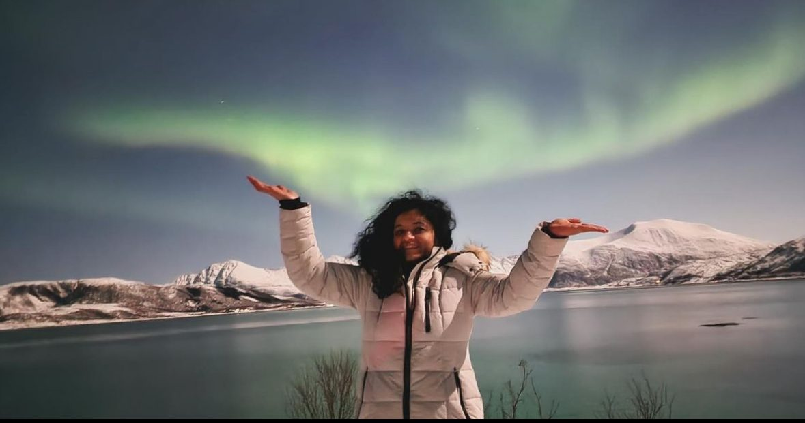
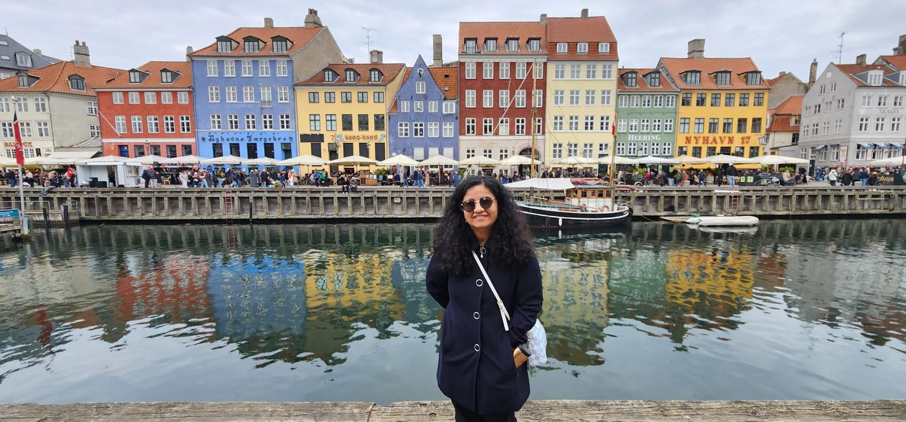
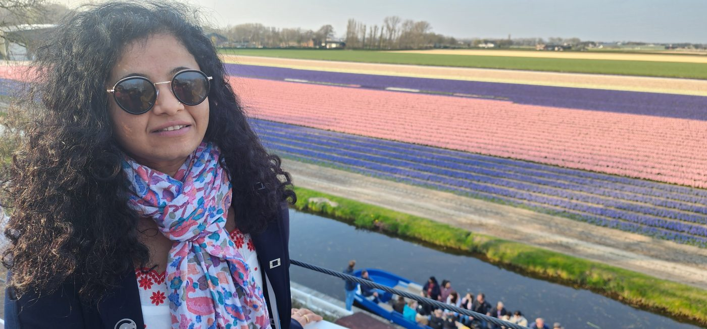

About
I study how tissues respond to infection. As a Postdoctoral Research Associate in the Agaisse Lab at the University of Virginia School of Medicine, I map Shigella invasion and the local immune response in the colon, combining multiplex RNAscope on FFPE tissue, quantitative image analysis, and RNA-seq of infected tissue and human biopsies.
Before UVA, I worked on microbial genomics, metagenomics, and antimicrobial resistance across environmental and One Health settings in India and Finland, and contributed to the IPCC Sixth Assessment Report and the UN Interagency Coordination Group on Antimicrobial Resistance.
13+ years of research · 15 peer-reviewed publications · 5 book chapters · 15+ students and staff trained
Selected research

Spatial mapping of Shigella invasion
Spatial and temporal mapping of colonic invasion in the infant rabbit model: which cells are invaded, in what order, and how macrophage and neutrophil responses are organized around invasion sites.
Spatial biologyImmunology Preprint (bioRxiv 2026)
Serology QC and power analysis in R
A reproducible analysis of a public serosurvey (3,080 sera): data QC, assay cutoff evaluation with a mixture model, seroprevalence with confidence intervals, and power and sample-size calculations for study design.
BiostatisticsR Code on GitHub
Antimicrobial resistance across One Health niches
A review of how antimicrobial resistance moves between animal, agricultural, and environmental reservoirs, informing international AMR policy discussions.
AMROne Health Environmental Microbiology 2022
Genomics of Indian rabies virus isolates
Oxford Nanopore whole-genome sequencing of canine rabies virus isolates and phylogenetic analysis for One Health surveillance.
GenomicsNanopore
Microbial communities in wastewater treatment
Metagenomic analysis of how activated-sludge communities adapt and which degradation pathways they carry, to design more efficient industrial treatment.
Metagenomics Functional & Integrative Genomics 2019Experience
Postdoctoral Research Associate
Postdoctoral Fellow
Research Scientist
Senior Research Fellow and Project Fellow
Education
Ph.D., Biotechnology
M.Sc., Biotechnology
B.Sc., Botany (Gold Medallist)
Certificate, Immuno-oncology
Leadership and service
Vice Chair, Professional Development Committee
Founder, Postdoctoral Leadership
Jury member and mentor, NITI Next Generation Water Action
Chapter Coordinator

Selected publications
- Jadeja NB, Devasure BA, Yum LK, Agaisse HF (2026). Sequential invasion of epithelial and immune cells in shigellosis. bioRxiv. doi
- Hall CP, Jadeja NB, Sebeck N, Agaisse H (2022). Characterization of MxiE- and H-NS-dependent expression of ipaH7.8, ospC1, yccE, and yfdF in Shigella flexneri. mSphere 7(6).
- Jadeja NB, Worrich A (2022). From gut to mud: dissemination of antimicrobial resistance between animal and agricultural niches. Environmental Microbiology 24(8). link
- Kumar A, … Jadeja NB, … Tatu U (2022). Genome sequences of five Indian canine rabies virus isolates obtained using Oxford Nanopore sequencing. Microbiology Resource Announcements 11(5).
- Jadeja NB, Purohit HJ, Kapley A (2019). Decoding microbial community intelligence through metagenomics for efficient wastewater treatment. Functional & Integrative Genomics 19. link
Full list on Google Scholar and ORCID.
Talks and conferences
EMBO Workshop on Shigella, Paris (2026) · Neutrophil Conference, San Diego (2026) · IUIS Congress, Vienna (2025) · Wellcome Trust SEDRIC and Chatham House AMR meetings, London (2019)


Beyond the lab
In 2016, an Academy of Finland mobility grant took me to the Finnish Environment Institute for metagenomic work on Baltic Sea sediments, including fieldwork at sea. Outside research, I love to travel.





Contact
I'm always happy to talk about research, collaborations, or opportunities.
nitijadeja@virginia.edu · Charlottesville, VA